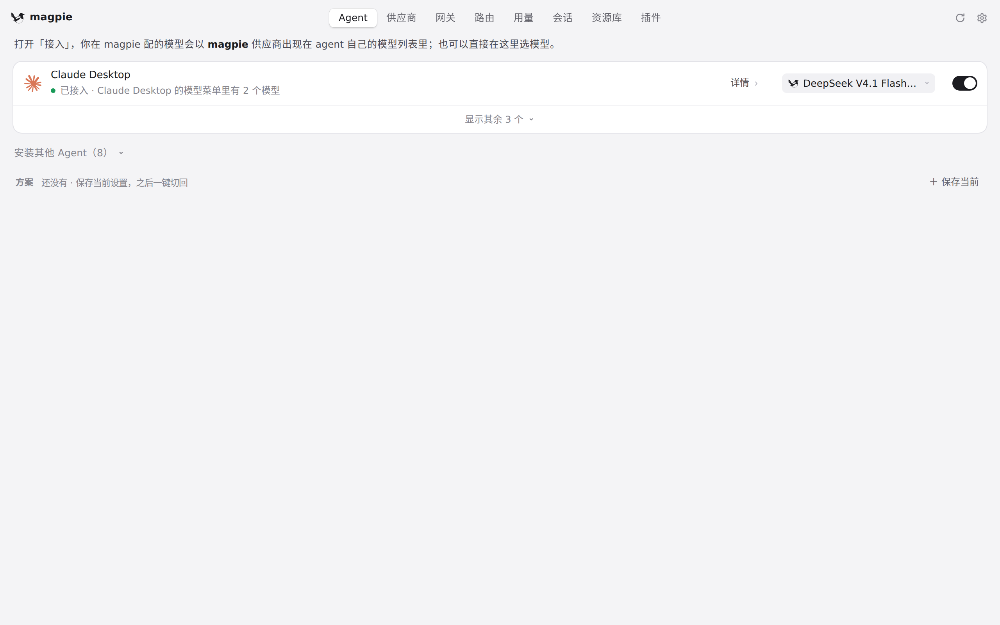
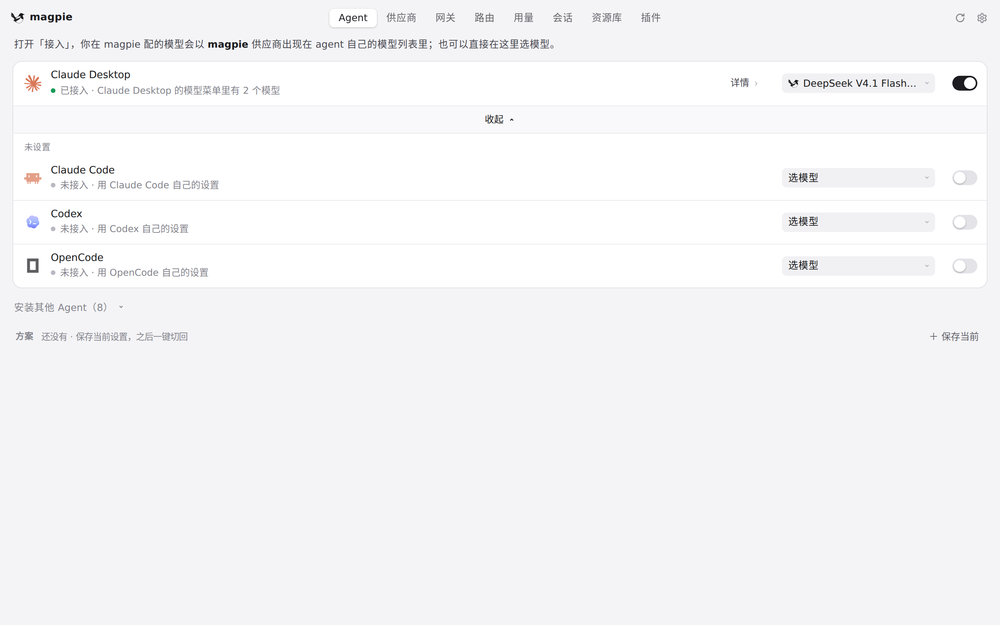
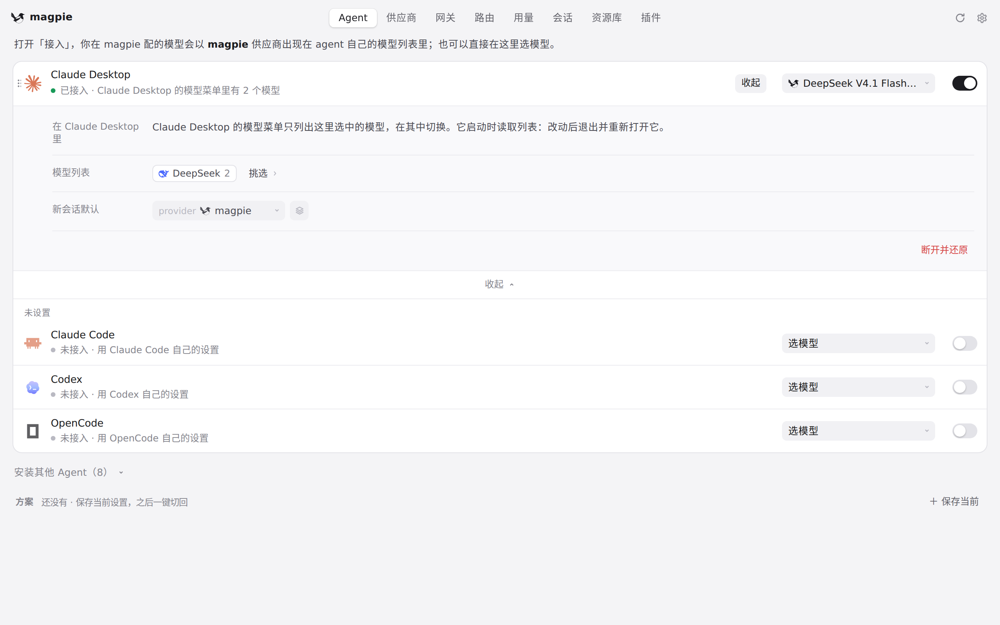

#827 界面预览
commit cf59f68 · 回到 PR · 这次改动把 Aside 的「接入提供方」和「选择模型」分开：接入只注册 magpie 提供方、不再改写模型选择；Agent 行与详情面板会显示各字段的状态（图片未验证、缺少恢复记录、已保存但待下次启动、运行状态读不到等），运行状态读不到时保存模型会先问「保存供下次启动使用」，断开预览算不出来时会阻止断开并把原因写在对话框里。
红线是鼠标走过的轨迹，红色圆环是一次点击；底部文字是这一步在做什么。空格暂停，← → 逐段查看。

Agents 列表里找 Aside · Agent 页：已接入的 agent，以及折叠起来的其余 agent

Agents 列表里找 Aside · 展开后的 Agent 列表

字段状态会出现的详情面板 · 详情面板：Aside 接入后，各字段的状态说明会在这里逐条列出